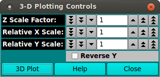
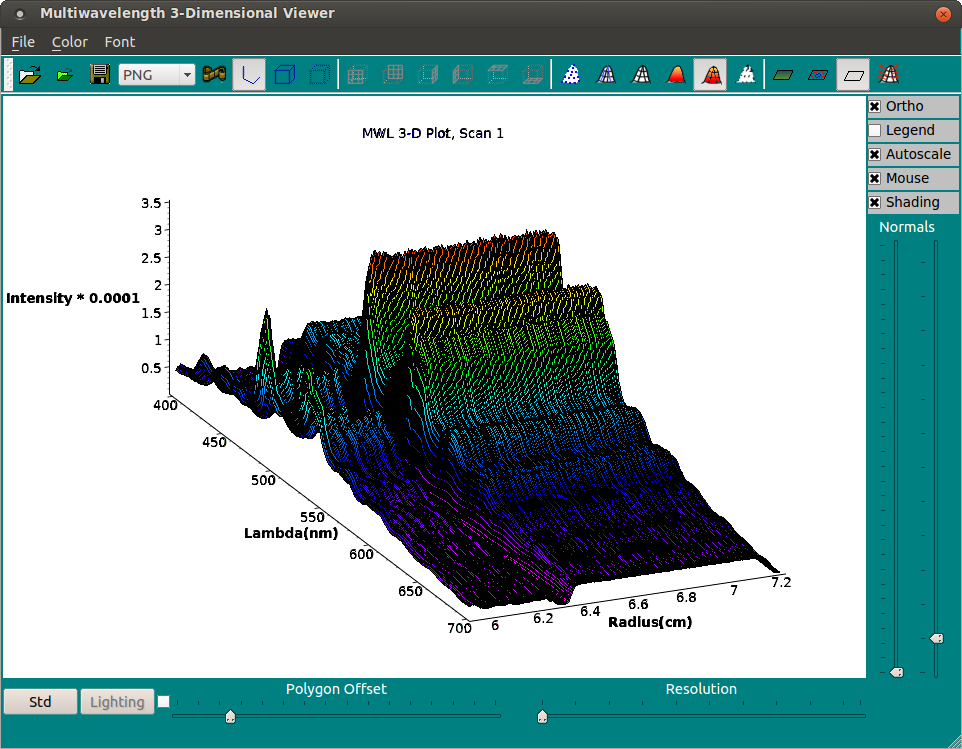

UltraScan MWL Viewer 3-D Plot Control:
This small dialog launches a 3-dimensional MWL plot and allows
setting of the basic initial controls of that plot.

Functions:
-
Z Scale Factor: Select the scale factor to apply to
the Z (intensity) axis of the plot.
-
Relative X Scale: Select the scale factor to apply to
the X (radius) axis of the plot.
-
Relative Y Scale: Select the scale factor to apply to
the Y (lambda) axis of the plot.
-
Reverse Y Check this box to change the default Y
orientation (low lambda in back) to one in which the lambdas
are oriented from low lambda in front to high lambda in back.
-
3D Plot Click this button initially to bring up the 3-D
plot. Thereafter, this button can be clicked to re-plot after
changes to scale or orientation controls.
-
Help Click to bring up this documentation.
-
Close Click to close the 3-D plot window and the
control dialog.
3-dimensional Plot Window:
The image below is of the 3-D plot window shown or modified with
the 3D Plot control button.

There are many, many plot control options within the 3D Plot Window.
They will not be detailed here. The user is encouraged to explore the
GUI elements and the use of the mouse. It is simply pointed out that
moving the cursor with the left mouse button held down re-orients the
plot and that the "Std" button in the lower left returns orientation
to the default state.
 Manual
Manual